Antes de hablar de herederos y de herencia , el Govern de CiU debe enfrentarse a la cuestión largamente ocultada de los intereses económicos y familiares incrustados en la política catalana.
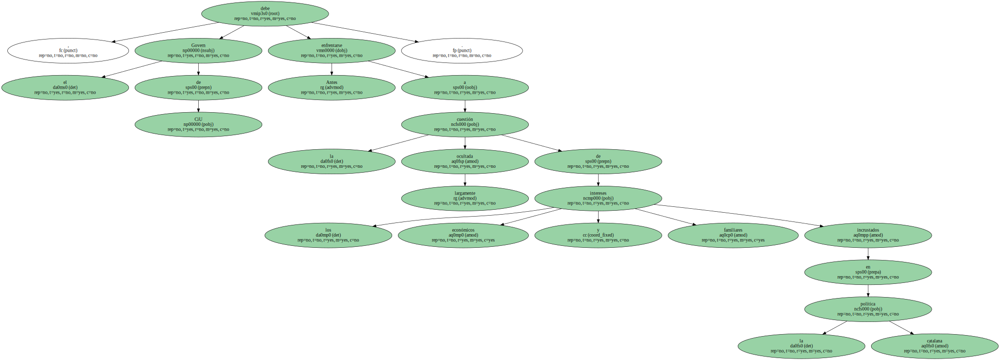El president de la Generalitat es un fan del ciclismo profesional.
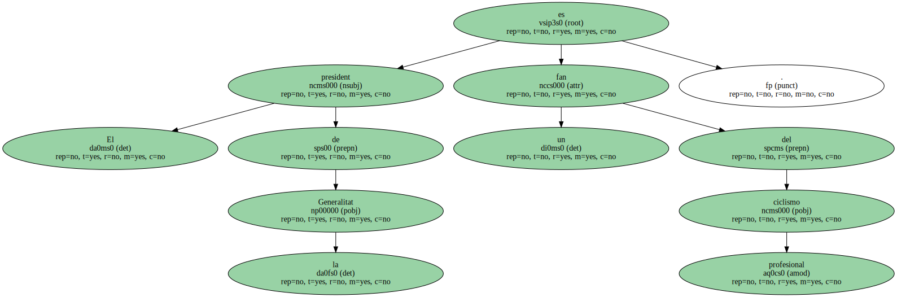Los míticos Jacques Anquetil y Eddy Merckx ganaron cinco Tours de Francia.
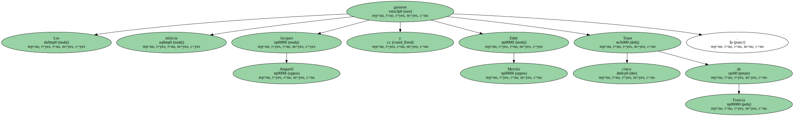El extraordinario Miguel Induráin intentó ganar el sexto , lo que nadie ha hecho nunca.
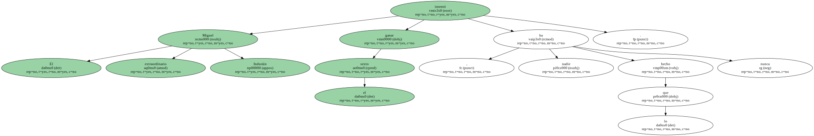Si lo hubiera logrado por 30 segundos sería tan bueno como si lo hubiera hecho por 30 minutos.
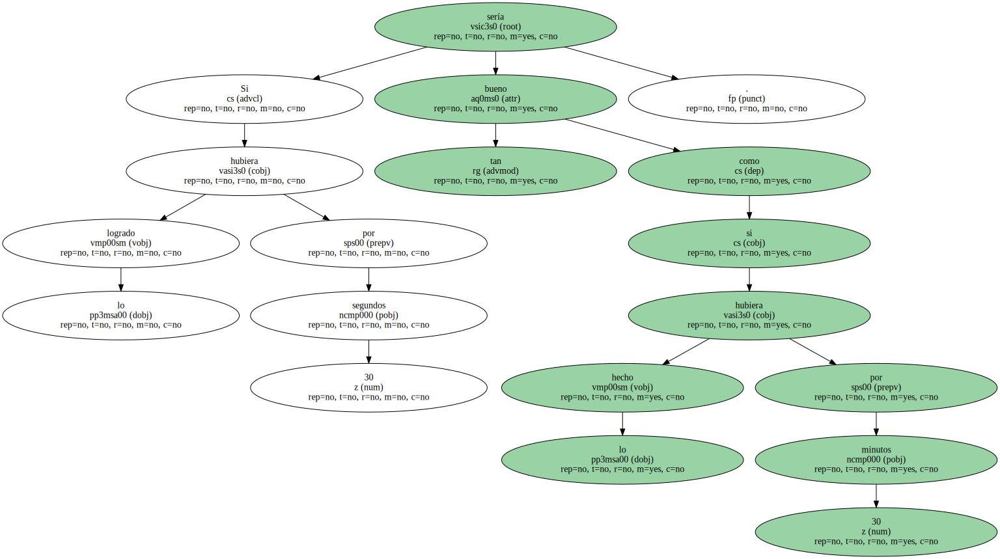Habría ganado.
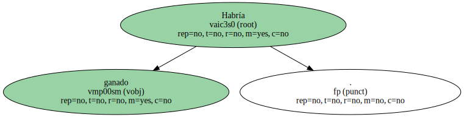Aquí , después de las elecciones catalanas , la poca tradición democrática hizo que los políticos perdedores no quisieran reconocer al maillot amarillo.
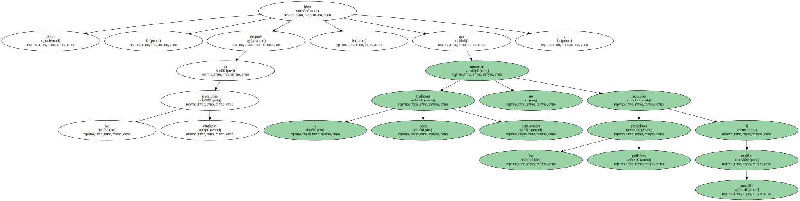Todos habían ganado.
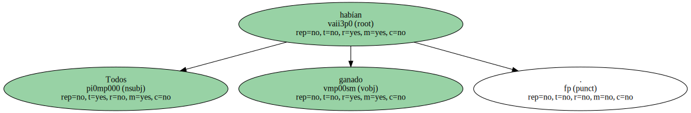Los perdedores no saben perder , pero los ganadores tampoco saben ganar.
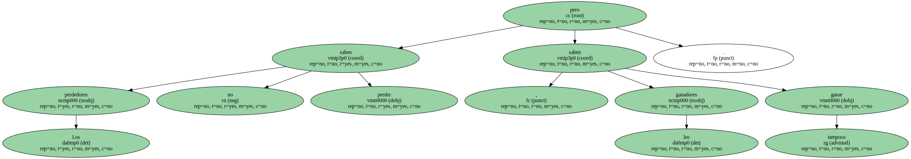El candidato del cambio frustrado , Pasqual Maragall , lamenta que el nuevo Govern barra hacia casa : " No recoge el deseo muy importante de cambio ".
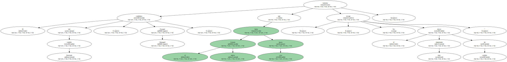Añade Rafael Ribó , antes ecosocialista y ahora un eco socialista : " sigue con una línea de confianza en círculos reducidos y cara a los poderosos ".
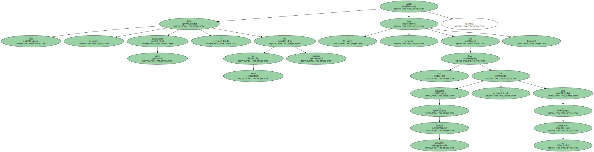Jordi Pujol quiere contentar a todos , incluso a la familia : " Estoy al servicio de Catalunya desde que tenía 16 años . No se puede estar 53 años al pie del cañón sin el apoyo , la comprensión y el afecto de los tuyos , y sin compartir momentos buenos pero también malos ".
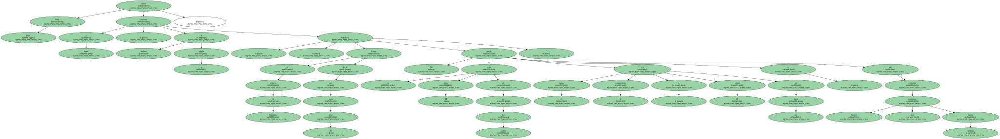Los pretendientes impacientes hacen cola : Artur Mas se encuentra " bien situado " , y Josep Antoni Duran Lleida dice modestamente : " No estoy en mala posición ".
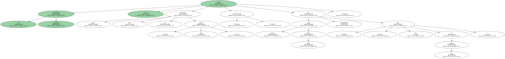El equilibrista miedoso Josep Lluís Carod-Rovira es el único que no va a los actos oficiales , no sea que alguien a la derecha o a la izquierda le pida gobernar.
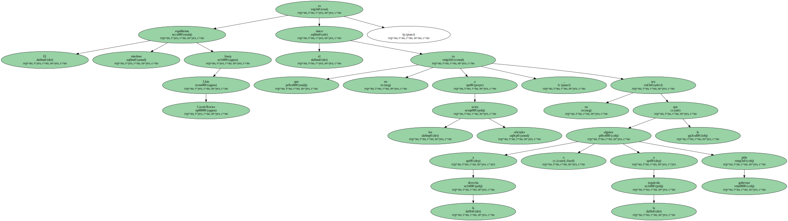La dependencia de los partidos estatales hace todavía más difícil solucionar el problema sin resolver de un gobierno más limpio en Catalunya.
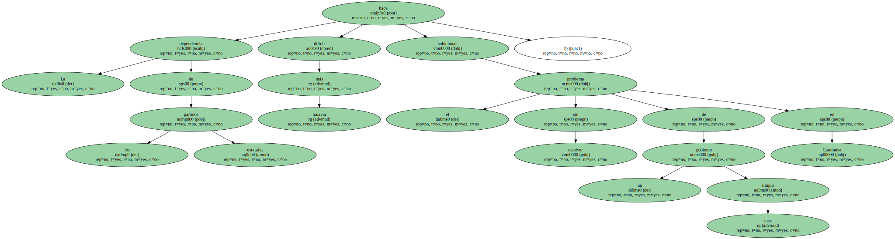Los nacionalistas aún tienen que saber ganar enfrentándose a la cuestión largamente ocultada de los intereses económicos y familiares incrustados en la política catalana.

La ambición electoral debe completarse con la limpieza de la política catalana.
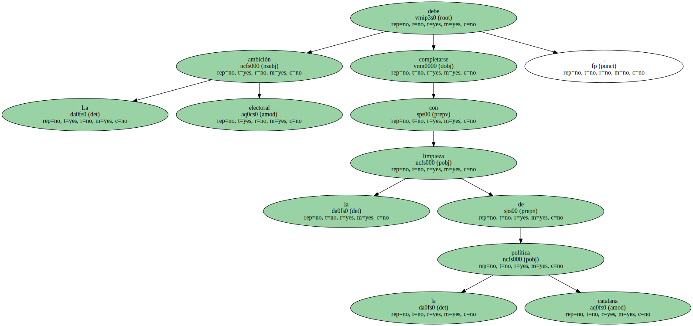Los políticos no pueden tener familiares cobrando de la Generalitat ; ésta tiene que ser la regla general.
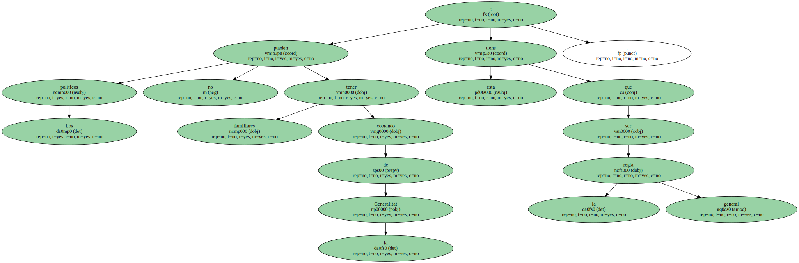Ciertamente los hijos tienen que estar colocados , pero no a costa de nosotros los contribuyentes.
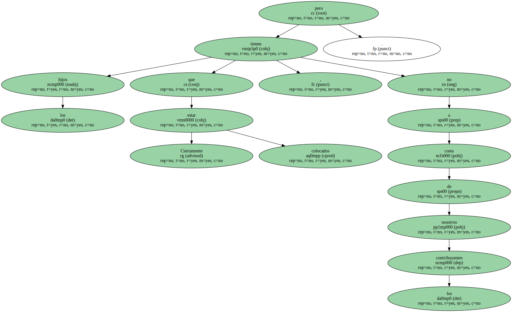Federico Mayor Zaragoza me explicaba que cuando era ministro centrista no descolgaba nunca el teléfono a los familiares.
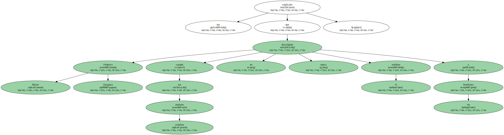Ahora deja la Unesco , que había sido un nido de corrupción tercermundista , con dignidad y la cabeza bien alta.
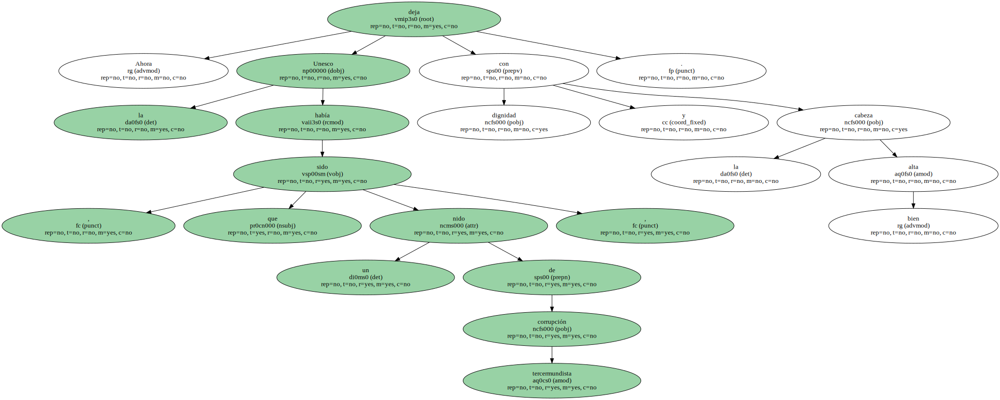Res ?.
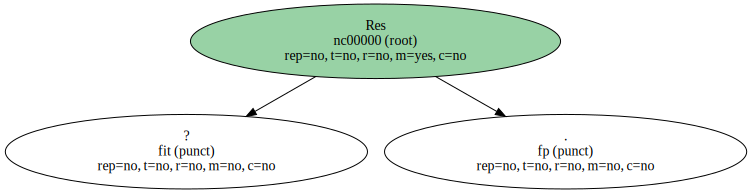Catalunya es un país pequeño como Suiza y puede ir igual de bien sin contratos oficiales con amigos , conocidos y saludados , como diría el escéptico Josep Pla.
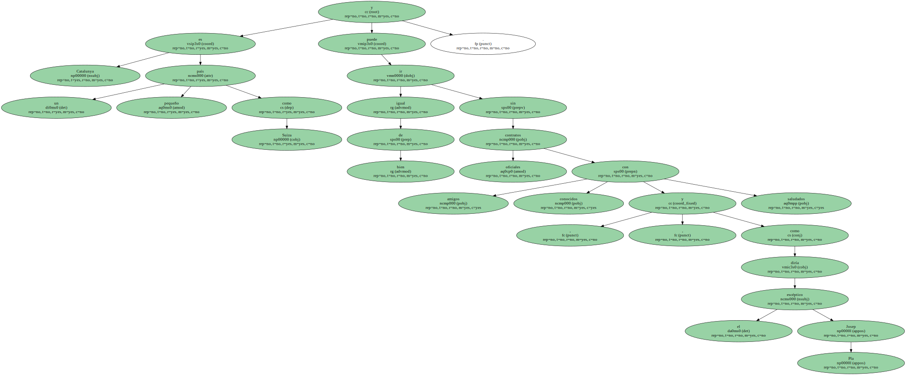Los nacionalistas tienen una dura labor de gobierno si quieren hacer la Catalunya plena , que no sea discriminada , con un gobierno al lado de los catalanes y no distante.
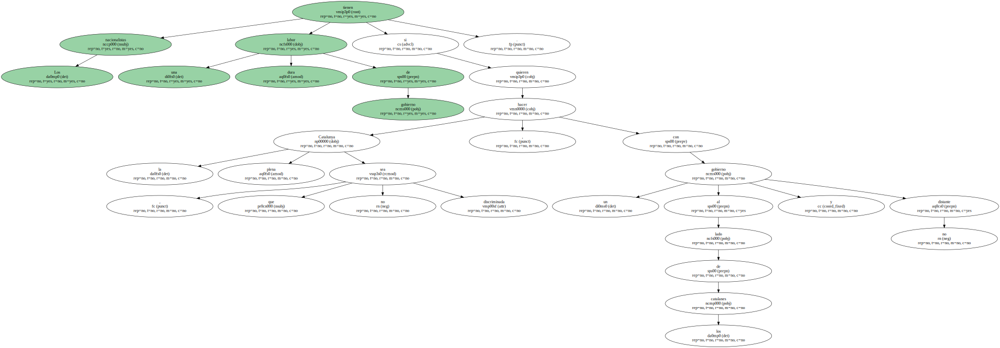Aún será más difícil limpiar las formas.
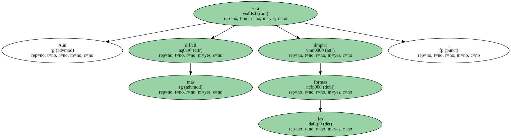Antes de hablar de herederos y de herencia , por favor , hagamos que podamos vivir en una casa limpia.
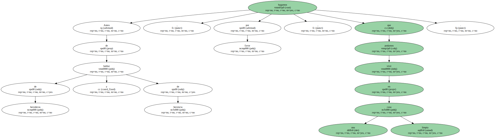Este es el monumento al futuro del sexto ganador del Tour : dejarnos un país tan limpio en su gobierno como el cielo claro después de las tormentas mediterráneas , que inundan nuestras obras públicas sin encontrar nunca ni un solo responsable político de tanta mala gestión , ya sea la plaza de Cerdà socialista o los incendios forestales de la Generalitat.
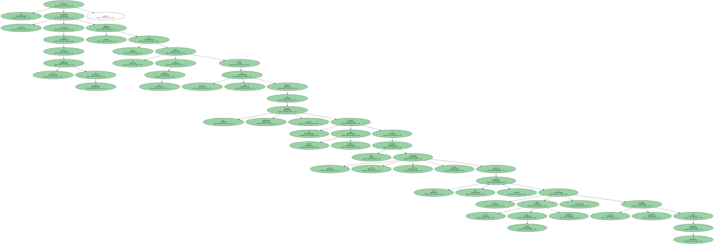Ganemos la limpieza y perdamos el mal hacer de la política.
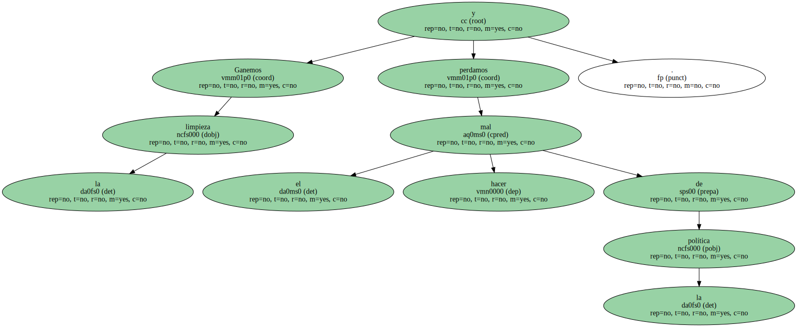